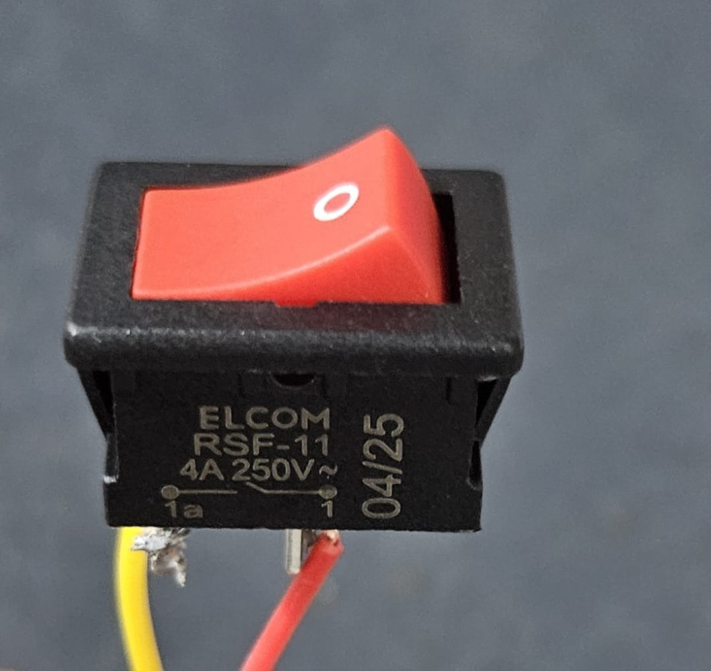

üîß Basic Information
- Name: ON/OFF Switch
- Type: Mechanical switch (toggle, slide, pushbutton, rocker, etc.)
- Function: Opens or closes an electrical circuit manually
⚙️ Common Types
- Toggle Switch – Lever flicks up/down
- Slide Switch – Slider moves side-to-side
- Rocker Switch – Rocking action (like a wall switch)
- Pushbutton Switch
- Momentary (e.g., doorbell)
- Latch-type (push once ON, push again OFF)
- Tactile Switch – Small, used on breadboards
⚡ Electrical Specs
- Voltage Rating: Typically 12V or 24V (check datasheet)
- Current Rating: Usually ~0.5A to 5A
- Poles & Throws:
- SPST (Single Pole Single Throw) – Basic ON/OFF
- SPDT – ON/ON or ON/OFF/ON (used for switching between circuits)
üß± Applications
- Power control for Arduino, modules, motors, etc.
- Manual control in DIY electronics projects
- Reset buttons or input triggers
- Powering sensors or vibration motors selectively
⚠️ Connection Tips
Wire in series with the power supply to act as a master power switch. For microcontroller input, connect one side to a digital pin and the other to GND, with a pull-up resistor (or use the internal pull-up resistor via code).